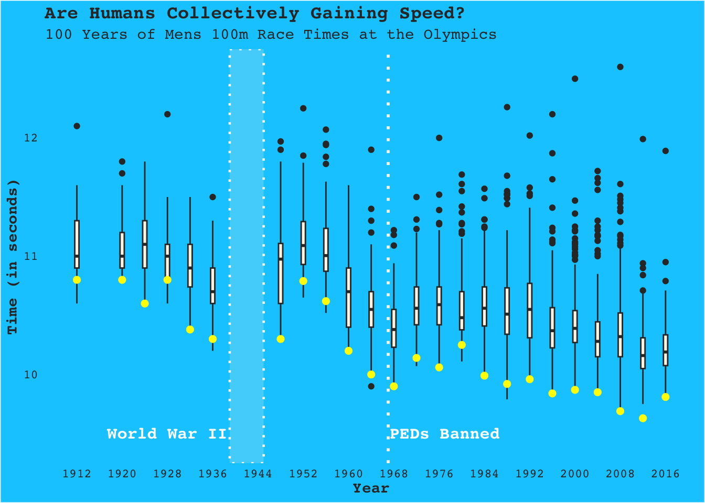

Show Code
knitr::opts_chunk$set(message = FALSE, warning = FALSE)Rochelle Rafn
December 8, 2021
I scraped all available data for the times of every heat in the 100m dash at the Olympics over nearly 100 years.
Before we dive in to all times, I first have subdivided the data by event and gender, then extracted only the medal winners to see if there is a pattern there first.
oly_men_100m <- oly_men_clean %>%
filter(Event == "100 metres")%>%
arrange(desc(Year)) %>%
relocate(Year, Name, Medal, Time, Event, Host.City, Host.Country, Athlete.Country, Record)
head(oly_men_100m) %>%
gt() %>%
tab_header(title = "Men's 100m Dash",
subtitle = "Medal Winners") %>%
tab_source_note(
source_note = "Source: Wikipedia"
) %>%
gtExtras::gt_theme_espn()| Men's 100m Dash | ||||||||
| Medal Winners | ||||||||
| Year | Name | Medal | Time | Event | Host.City | Host.Country | Athlete.Country | Record |
|---|---|---|---|---|---|---|---|---|
| 2016 | Usain Bolt | Gold | 9.81 | 100 metres | Rio de Janeiro | Brazil | Jamaica | NA |
| 2016 | Justin Gatlin | Silver | 9.89 | 100 metres | Rio de Janeiro | Brazil | United States | NA |
| 2016 | Andre De | Bronze | 9.91 | 100 metres | Rio de Janeiro | Brazil | Grasse Canada | NA |
| 2012 | Usain Bolt | Gold | 9.63 | 100 metres | London | Great Britain | Jamaica | OR) |
| 2012 | Yohan Blake | Silver | 9.75 | 100 metres | London | Great Britain | Jamaica | NA |
| 2012 | Justin Gatlin | Bronze | 9.79 | 100 metres | London | Great Britain | United States | NA |
| Source: Wikipedia | ||||||||
oly_women_100m <- oly_women_clean %>%
filter(Event == "100 metres")%>%
arrange(desc(Year)) %>%
relocate(Year, Name, Medal, Time, Event, Host.City, Host.Country, Athlete.Country, Record)
head(oly_women_100m) %>%
gt() %>%
tab_header(title = "Women's 100m Dash",
subtitle = "Medal Winners") %>%
tab_source_note(
source_note = "Source: Wikipedia"
) %>%
gtExtras::gt_theme_espn()| Women's 100m Dash | ||||||||
| Medal Winners | ||||||||
| Year | Name | Medal | Time | Event | Host.City | Host.Country | Athlete.Country | Record |
|---|---|---|---|---|---|---|---|---|
| 2016 | Elaine Thompson | Gold | 10.71 | 100 metres | Rio de Janeiro | Brazil | Jamaica | NA |
| 2016 | Tori Bowie | Silver | 10.83 | 100 metres | Rio de Janeiro | Brazil | United States | NA |
| 2016 | Shelly-Ann Fraser-Pryce | Bronze | 10.86 | 100 metres | Rio de Janeiro | Brazil | Jamaica | NA |
| 2012 | Shelly-Ann Fraser-Pryce | Gold | 10.75 | 100 metres | London | Great Britain | Jamaica | NA |
| 2012 | Carmelita Jeter | Silver | 10.78 | 100 metres | London | Great Britain | United States | NA |
| 2012 | Veronica Campbell-Brown | Bronze | 10.81 | 100 metres | London | Great Britain | Jamaica | NA |
| Source: Wikipedia | ||||||||
Lets looks at the journey of the medals from 1912 to 2008
library(plotly)
mens_100m_gsb_ani <- ggplot(oly_men_100m, aes(Year, Time, color = Medal, frame = Year))+
geom_point(size = 5, alpha = 0.6)+
geom_line()+
labs(title = "Gold, Silver & Bronze Medals Over 100 Years",
subtitle = "Mens 100m Dash",
y = "Time (in seconds)")+
theme(panel.background = element_blank(),
plot.background = element_blank(),
panel.grid.major = element_blank(),
panel.grid.minor = element_blank(),
plot.title = element_text(family = "Courier"),
legend.title = element_text(family = "Courier"),
plot.subtitle = element_text(family = "Courier"),
axis.text = element_text(family = "Courier"),
legend.text = element_text(family = "Courier"),
legend.background = element_blank(),
axis.title = element_text(family = "Courier"),
legend.key = element_rect(fill = "white"))+
scale_color_manual(values = c("#FFB48C", "#EBD739", "#B5BCC2"))
ggplotly(mens_100m_gsb_ani)Here is a flat version of the same plot with more context regarding spikes in time due to historical context.
men100m_graph <- oly_men_100m %>%
ggplot(aes(Year, Time, color = Medal))+
geom_point(alpha = 0.7, size = 2.7)+
geom_line(alpha = 0.7, size = 0.8)+
geom_rect(xmin=1939, xmax=1945, ymin=9.6, ymax=10.64, color = "grey", linetype = "dotted", alpha = 0)+
geom_vline(xintercept = 1967, linetype = "dotted", color = "grey", size = 0.75)+
theme(panel.background = element_blank(),
plot.background = element_blank(),
panel.grid.major = element_blank(),
panel.grid.minor = element_blank(),
plot.title = element_text(family = "Courier"),
legend.title = element_text(family = "Courier"),
plot.subtitle = element_text(family = "Courier"),
axis.text = element_text(family = "Courier"),
legend.text = element_text(family = "Courier"),
legend.background = element_blank(),
axis.title = element_text(family = "Courier"),
legend.key = element_rect(fill = "white"))+
scale_color_manual(values = c("#FFB48C", "#EBD739", "#B5BCC2"))+
scale_x_continuous(breaks = c(1936, 1944, 1952, 1960, 1968, 1976, 1984, 1992, 2000, 2008, 2016),
labels = c("1936", "1944", "1952", "1960", "1968", "1976", "1984", "1992", "2000", "2008", "2016"))+
geom_text(aes(1976, 9.65), label = "PEDs Banned", size = 3.8, family = "Courier", color = "grey")+
geom_text(aes(1949, 9.65), label = "WWII", size = 3.8, family = "Courier", color = "grey")+
labs(title = "Gold, Silver & Bronze Medals Over Time",
subtitle = "Mens 100m Dash",
y = "Time (in seconds)")
men100m_graphLets looks at the journey of the medals from 1912 to 2008 for the Women’s 100m race.
womens_100m_gsb_ani <- ggplot(oly_women_100m, aes(Year, Time, color = Medal, frame = Year))+
geom_point(size = 5, alpha = 0.6)+
geom_line()+
labs(title = "Gold, Silver & Bronze Medals Over 100 Years",
subtitle = "Mens 100m Dash",
y = "Time (in seconds)")+
theme(panel.background = element_blank(),
plot.background = element_blank(),
panel.grid.major = element_blank(),
panel.grid.minor = element_blank(),
plot.title = element_text(family = "Courier"),
legend.title = element_text(family = "Courier"),
plot.subtitle = element_text(family = "Courier"),
axis.text = element_text(family = "Courier"),
legend.text = element_text(family = "Courier"),
legend.background = element_blank(),
axis.title = element_text(family = "Courier"),
legend.key = element_rect(fill = "white"))+
scale_color_manual(values = c("#FFB48C", "#EBD739", "#B5BCC2"))
ggplotly(womens_100m_gsb_ani)2000 Women’s 100M gold: The gold medal was originally won by Marion Jones of the United States. However, on 5 October 2007, she admitted to having used performance-enhancing drugs prior to the 2000 Olympics. On 9 October she relinquished her medals to the United States Olympic Committee, and on 12 December the International Olympic Committee formally stripped her of her medals.
The IOC did not initially decide to regrade the results, as silver medalist Ekaterini Thanou had herself been subsequently involved in a doping scandal in the run-up to the 2004 Summer Olympics. After two years of deliberation, in late 2009 the IOC decided to upgrade Lawrence (original bronze) and Ottey (original 4th) to silver and bronze respectively, and leave Thanou as a silver medallist, with the gold medal withheld
library(gganimate)
women100m_graph <- oly_women_100m %>%
ggplot(aes(Year, Time, color = Medal))+
geom_point(alpha = 0.7, size = 2.7)+
geom_line(alpha = 0.7, size = 0.8)+
geom_rect(xmin=1939, xmax=1945, ymin=10.5, ymax=12.25, color = "grey", linetype = "dotted", alpha = 0)+
geom_vline(xintercept = 1967, linetype = "dotted", color = "grey", size = 0.75)+
labs(title = "Gold, Silver & Bronze Medals Over 100 Years",
subtitle = "Womens 100m Dash",
y = "Time (in seconds)")+
theme(panel.background = element_blank(),
plot.background = element_blank(),
panel.grid.major = element_blank(),
panel.grid.minor = element_blank(),
plot.title = element_text(family = "Courier"),
legend.title = element_text(family = "Courier"),
plot.subtitle = element_text(family = "Courier"),
axis.text = element_text(family = "Courier"),
legend.text = element_text(family = "Courier"),
legend.background = element_blank(),
axis.title = element_text(family = "Courier"),
legend.key = element_rect(fill = "white"))+
scale_color_manual(values = c("#FFB48C", "#EBD739", "#B5BCC2"))+
scale_x_continuous(breaks = c(1936, 1944, 1952, 1960, 1968, 1976, 1984, 1992, 2000, 2008, 2016),
labels = c("1936", "1944", "1952", "1960", "1968", "1976", "1984", "1992", "2000", "2008", "2016"))+
geom_text(aes(1976, 10.55), label = "PEDs Banned", size = 3.8, family = "Courier", color = "grey")+
geom_text(aes(1949, 10.55), label = "WWII", size = 3.8, family = "Courier", color = "grey")
women100m_graphLooking at the full Men’s 100m distribution of all heats from Stockholm 1912 to Rio de Janeiro 2016, including major historical events. There are a few interesting things going on here. You’ll notice that times slowed down after the large break due to WWII and also the ban on PEDs. Another interesting thing that would have been missed without this information is that the gold medal is not always the fastest time.
# Rio de Janeiro 2016
rio_men_100m_all <- mens_100m_all %>%
filter(Year == 2016)
# Beijing 2008
bei_men_100m_all <- mens_100m_all %>%
filter(Year == 2008)
# London 2012
lon12_men_100m_all <- mens_100m_all %>%
filter(Year == 2012)
# Athens 2004
ath_men_100m_all <- mens_100m_all %>%
filter(Year == 2004)
# Sydney 2000
syd_men_100m_all <- mens_100m_all %>%
filter(Year == 2000)
# Atlanta 1996
atl_men_100m_all <- mens_100m_all %>%
filter(Year == 1996)
# Barcelona 1992
bar_men_100m_all <- mens_100m_all %>%
filter(Year == 1992)
# Seoul 1988
seo_men_100m_all <- mens_100m_all %>%
filter(Year == 1988)
# Los Angeles 1984
los_men_100m_all <- mens_100m_all %>%
filter(Year == 1984)
# Moscow 1980
mos_men_100m_all <- mens_100m_all %>%
filter(Year == 1980)
# Montreal 1976
mon_men_100m_all <- mens_100m_all %>%
filter(Year == 1976)
# Munich 1972
mun_men_100m_all <- mens_100m_all %>%
filter(Year == 1972)
# Mexico City 1968
mex_men_100m_all <- mens_100m_all %>%
filter(Year == 1968)
# Tokyo 1964
tok_men_100m_all <- mens_100m_all %>%
filter(Year == 1964)
# Rome 1960
rom_men_100m_all <- mens_100m_all %>%
filter(Year == 1960)
# Melbourne 1956
mel_men_100m_all <- mens_100m_all %>%
filter(Year == 1956)
# Helsinki 1952
hel_men_100m_all <- mens_100m_all %>%
filter(Year == 1952)
# London 1948
lon48_men_100m_all <- mens_100m_all %>%
filter(Year == 1948)
# Berlin 1936
ber_men_100m_all <- mens_100m_all %>%
filter(Year == 1936)
# Los Angeles 1932
los32_men_100m_all <- mens_100m_all %>%
filter(Year == 1932)
# Amsterdam 1928
ams_men_100m_all <- mens_100m_all %>%
filter(Year == 1928)
# Paris 1924
par_men_100m_all <- mens_100m_all %>%
filter(Year == 1924)
# Antwerp 1920
ant_men_100m_all <- mens_100m_all %>%
filter(Year == 1920)
# Stockholm 1912
sto_men_100m_all <- mens_100m_all %>%
filter(Year == 1912)
# Gold Medals
mens_100m_gold <- mens_100m_all %>%
filter(Rank == "Gold")%>%
group_by(Year, Rank)mens_100m_box <- ggplot()+
geom_boxplot(data = rio_men_100m_all, aes(Time, Year), fill = "oldlace")+
geom_boxplot(data = bei_men_100m_all, aes(Time, Year), fill = "oldlace")+
geom_boxplot(data = lon12_men_100m_all, aes(Time, Year), fill = "oldlace")+
geom_boxplot(data = ath_men_100m_all, aes(Time, Year), fill = "oldlace")+
geom_boxplot(data = syd_men_100m_all, aes(Time, Year), fill = "oldlace")+
geom_boxplot(data = atl_men_100m_all, aes(Time, Year), fill = "oldlace")+
geom_boxplot(data = bar_men_100m_all, aes(Time, Year), fill = "oldlace")+
geom_boxplot(data = seo_men_100m_all, aes(Time, Year), fill = "oldlace")+
geom_boxplot(data = los_men_100m_all, aes(Time, Year), fill = "oldlace")+
geom_boxplot(data = mos_men_100m_all, aes(Time, Year), fill = "oldlace")+
geom_boxplot(data = mon_men_100m_all, aes(Time, Year), fill = "oldlace")+
geom_boxplot(data = mun_men_100m_all, aes(Time, Year), fill = "oldlace")+
geom_boxplot(data = mex_men_100m_all, aes(Time, Year), fill = "oldlace")+
geom_boxplot(data = tok_men_100m_all, aes(Time, Year), fill = "oldlace")+
geom_boxplot(data = rom_men_100m_all, aes(Time, Year), fill = "oldlace")+
geom_boxplot(data = mel_men_100m_all, aes(Time, Year), fill = "oldlace")+
geom_boxplot(data = hel_men_100m_all, aes(Time, Year), fill = "oldlace")+
geom_boxplot(data = lon48_men_100m_all, aes(Time, Year), fill = "oldlace")+
geom_boxplot(data = ber_men_100m_all, aes(Time, Year), fill = "oldlace")+
geom_boxplot(data = los32_men_100m_all, aes(Time, Year), fill = "oldlace")+
geom_boxplot(data = ams_men_100m_all, aes(Time, Year), fill = "oldlace")+
geom_boxplot(data = par_men_100m_all, aes(Time, Year), fill = "oldlace")+
geom_boxplot(data = ant_men_100m_all, aes(Time, Year), fill = "oldlace")+
geom_boxplot(data = sto_men_100m_all, aes(Time, Year), fill = "oldlace")+
geom_point(data = mens_100m_gold, aes(Time, Year, color = "Rank"), color = "yellow", size=2)+
coord_flip()+
theme(panel.background = element_rect(fill = "#00CCFF"),
plot.background = element_rect(fill = "#00CCFF"),
panel.grid.major.y = element_blank(),
panel.grid.minor.y = element_blank(),
panel.grid.major.x = element_blank(),
panel.grid.minor.x = element_blank(),
plot.title = element_text(family = "Courier-Bold", color = "grey20"),
plot.subtitle = element_text(color = "grey20", family = "Courier"),
axis.text = element_text(color = "grey20", family = "Courier"),
axis.title = element_text(color = "grey20", family = "Courier-Bold"),
axis.ticks = element_blank())+
labs(title = "Are Humans Collectively Gaining Speed?",
subtitle = "100 Years of Mens 100m Race Times at the Olympics")+
scale_x_continuous("Time (in seconds)", limits = c(9.25,12.75), expand = c(0,0))+
scale_y_continuous(breaks = c(1912, 1920, 1928, 1936, 1944, 1952, 1960, 1968, 1976, 1984, 1992, 2000, 2008, 2016),
labels = c("1912", "1920", "1928", "1936", "1944", "1952", "1960", "1968", "1976", "1984", "1992", "2000", "2008", "2016"))+
geom_hline(yintercept = 1967, size = 1, color = "oldlace", linetype = 'dotted')+
geom_rect(aes(xmin=9.25, xmax=12.75, ymin=1939, ymax=1945), fill="oldlace", color = "oldlace", linetype = "dotted", alpha = 0.2, size = 0.8)+
geom_text(aes(9.5, 1928), label = "World War II", size = 4.2, family = "Courier-Bold", color = "white")+
geom_text(aes(9.5, 1977), label = "PEDs Banned", size = 4.2, family = "Courier-Bold", color = "white")
mens_100m_box